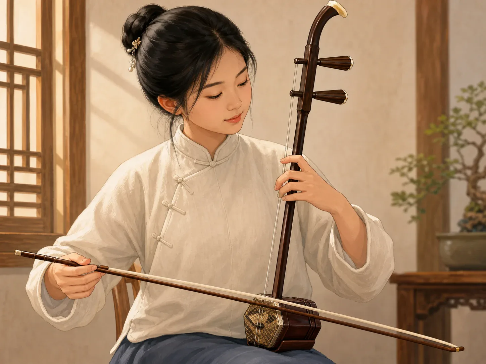
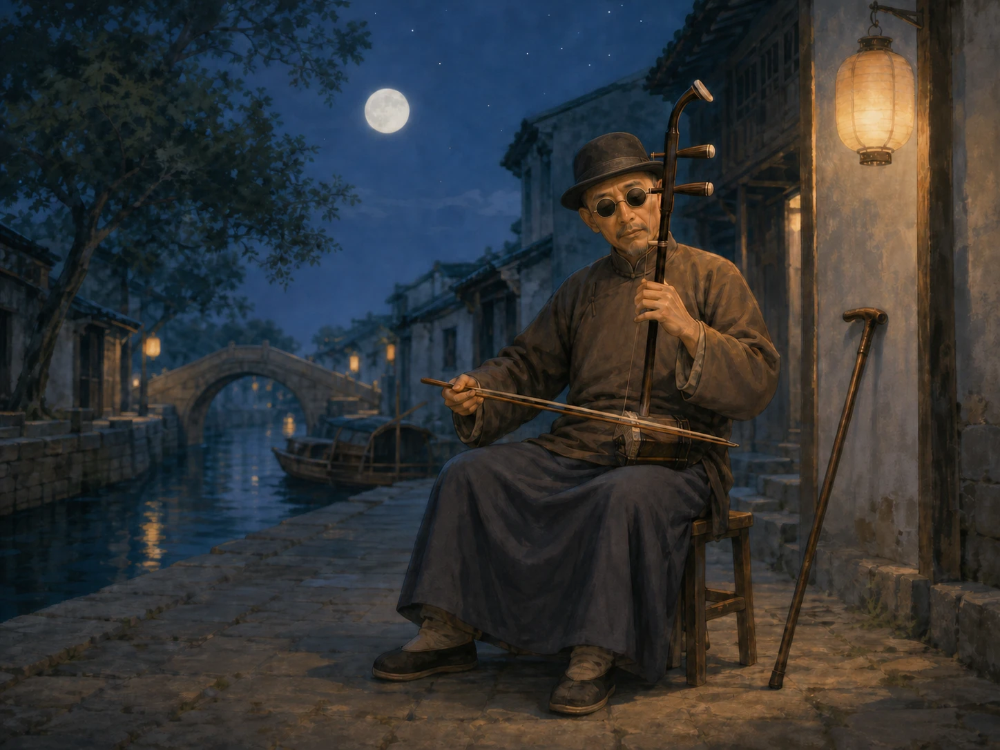
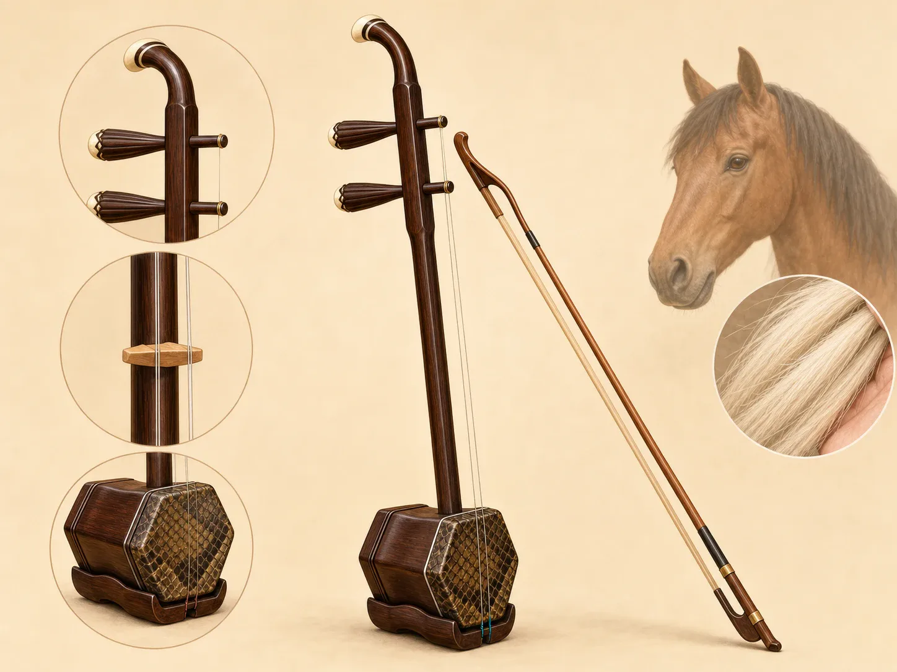

二胡：两根弦讲一个故事
Erhu: Two Strings Tell a Story
Page 1
它只有两根弦，声音却很像人在说话
It Has Only Two Strings, but It Sounds Like a Human Voice

The bow sits between the two strings. When the hand slides, the sound can feel almost like gentle singing.
二胡看起来很简单。一个小小的琴筒，一根长长的琴杆，两根弦，再加一把弓。
可它拉出来的声音常常不像机器，倒很像人在说话、叹气，或者慢慢唱歌。
这是因为二胡的左手会在弦上滑来滑去，音不是一下跳过去，而是轻轻滑过去。所以很多人一听，就会觉得它很像人的声音。
The erhu looks simple: a small sound box, a long neck, two strings, and one bow.
But its sound often feels less like a machine and more like a person speaking, sighing, or singing softly.
That happens because the left hand slides on the strings. The notes do not jump. They glide. So when many people hear the erhu, they think of a human voice.
Page 2
一首最有名的二胡曲，来自一位街头艺人
The Most Famous Erhu Piece Came from a Street Musician

A famous erhu musician from Wuxi whose piece Moon Reflected on the Second Spring became very well known. often played erhu in the street. Later, one of his pieces was heard by people almost everywhere.
最有名的二胡曲之一，叫《二泉映月》。拉这首曲子的人，是A famous erhu musician from Wuxi whose piece Moon Reflected on the Second Spring became very well known.。
他住在A city in eastern China.，靠街头卖艺生活。白天拉琴，晚上也常常自己静静地拉。
后来，有人把他的演奏录了下来。《二泉映月》慢慢传到了很远很远的地方。今天，很多人一听这首曲子，就会记住二胡那种安静又很深的声音。
One of the most famous erhu pieces is Moon Reflected on the Second Spring. The musician was A famous erhu musician from Wuxi whose piece Moon Reflected on the Second Spring became very well known..
He lived in A city in eastern China. and made a living by playing in the street. He played during the day, and he often played quietly for himself at night too.
Later, people recorded his music. Moon Reflected on the Second Spring slowly traveled far away. Today, when many people hear this piece, they remember the erhu's quiet and deep voice.
Page 3
它的老名字叫“胡琴”，弓上还常常用马尾毛
Its Older Name Was Huqin, and Its Bow Often Used Horsehair

The bow hair is often made from horsehair. The sound comes from the sound box, the strings, and the bow working together.
二胡更早的时候，常常叫“胡琴”。它和从北方、西方传来的乐器家族有关系。
它的弓毛常常用马尾毛，琴筒上也会用皮来帮助发声。看起来零件不多，可每一部分都很重要。
也难怪很多人觉得，二胡的声音里有风、有路，也有很远地方的感觉。它用最少的东西，讲出了很多故事。
Long ago, the erhu was often called huqin. It belongs to a family of instruments connected with lands north and west of China.
Its bow hair is often made from horsehair, and skin on the sound box helps shape the sound. The parts are few, but each part matters.
That may be why the erhu can make people think of wind, travel, and faraway places. It uses very little, yet it tells a lot.
Page 4
看起来最简单的琴，也能把感觉讲得很深
Even a Very Simple Instrument Can Say Deep Things
二胡没有很多零件，也不需要很大的声音。它最厉害的地方，是能把一点点滑动、停顿和轻重，变成很细的感觉。
所以孩子第一次听二胡时，就算还不知道曲名，也常常会先觉得：这把琴好像在说话。
The erhu does not have many parts, and it does not need to be loud. Its special gift is turning tiny slides, pauses, and changes of weight into feeling.
So when a child hears the erhu for the first time, the child may not know the name of the piece yet, but may still think, "This instrument sounds like it is talking."
小结
In Summary
二胡只有两根弦，却常常像人在唱歌。它的声音能安静，也能很深。
从A famous erhu musician from Wuxi whose piece Moon Reflected on the Second Spring became very well known. 的《二泉映月》，到二胡更早的“胡琴”故事，这把小小的琴一直在用很少的东西，讲很多很多感觉。
The erhu has only two strings, yet it can sound almost like a person singing. Its voice can be quiet and deep at the same time.
From A famous erhu musician from Wuxi whose piece Moon Reflected on the Second Spring became very well known.'s Moon Reflected on the Second Spring to the older story of the huqin, this small instrument keeps using very little to say very much.